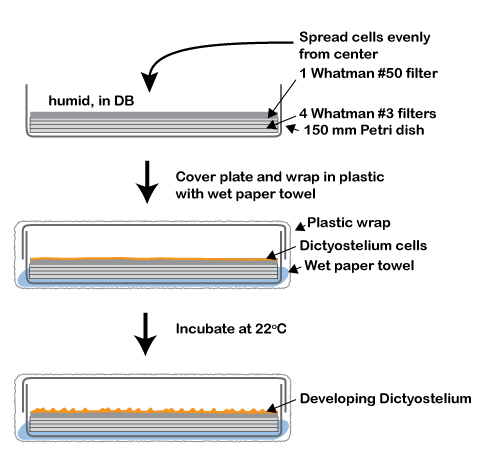

Protocols for Dictyostelium discoideum development
Please cite: Fey, P., Kowal, A. S., Gaudet, P., Pilcher, K. E., Chisholm, R. L. (2007) 'Protocols for growth and development of Dictyostelium discoideum.' Nat Protoc 2:1307-16
Here we describe conditions for successfully developing Dictyostelium cells. Other protocols that used to be combined as 'General Dictyostelium Techniques' are methods for Dictyostelium growth and for long-term storage of cells and spores.
Contents
General considerations for culturing Dictyostelium
 Used with permission from Chisholm, R.L. & Firtel, R.A. Insights into morphogenesis from a simple developmental system. Nat. Rev. Mol. Cell Biol. 5, 531–541 (2004). Used with permission from Chisholm, R.L. & Firtel, R.A. Insights into morphogenesis from a simple developmental system. Nat. Rev. Mol. Cell Biol. 5, 531–541 (2004).
|
It is important to harvest cells in mid-log phase for development (1-4 x 106 cells ml-1). This will favor synchronous development. At high cell density, many of the cells in a culture will have initiated development, thus yielding inconsistent results.
Try to maintain sterility throughout this process. Since development is induced by starvation, and Dictyostelium cells feed on bacteria, contamination of the buffer with bacteria or leftover medium interferes with development.
Gene expression in Dictyostelium cells changes as soon as nutrients are removed (1,2). Therefore, to analyze vegetative cells, it is important to use the cells immediately after the three washes as described in the 'Preparation of cells for development' section. It is also important to use cold buffer to rapidly inhibit all metabolic processes, including changes in gene expression and protein synthesis and degradation. Refer to the life cycle (left) for the timing of specific developmental stages. For example, expect to see aggregation after approximately 4-6 h, and fingers or slugs after approximately 16 h.
The D. discoideum life cycle. Developmental morphogenesis starting from single, vegetative amoebae to the formation of the mature fruiting body, which contains a sorus of spores on top of a stalk. Aggregation is mediated by the chemotaxis of cells toward cAMP to form a multicellular aggregate. During this process, cells can be seen streaming toward a central domain or aggregation center. Aggregation results in the formation of a multicellular organism, a mound, which then forms a tipped mound. As development proceeds, the tip extends and forms a finger. The extended finger might fall over to form a phototactic migrating slug. Eventually, the finger or slug contracts and the anterior tip begins to rise to form a fruiting body. During culmination, the cells differentiate into vacuolated stalk cells that support a spore head containing spore cells. The spores tolerate a wider range of environmental conditions than the amoebae and germinate following dispersal, renewing the cycle. The entire process from starvation of vegetative cells to the formation of a mature fruiting body takes 24 h.
|
[TOP] [INDEX]
Inducing development of Dictyostelium
Dictyostelium cells can be developed on solid media; they are plated on filter paper for best synchronicity and if developmental stages need to be harvested for further procedures, such as protein or RNA preparations. Cells can also be developed on KK2 plates for examination of morphology or to allow agar blocks to be cut out and reoriented for better visualization. Alternatively, cells may be developed in suspension, for example, to prepare aggregation-competent cells for cell migration studies; under these conditions, cells will only progress through the first 6-8 h of development. Addition of cAMP pulses to the starved suspension culture will allow development to progress up to the 12-h stage. Lastly there is the option for developmental conditions that favor slug formation and phototaxis.
[TOP] [INDEX]
Preparation of cells for development
- Collect 5 x 108 cells (at a concentration of 2 x 106 cells ml-1, use 250 ml of cells) and centrifuge at 500g for 4 min at room temperature. Pour off the supernatant.
Note: Grow cells as described in the growth protocols.
- Wash cells by resuspending the pellet in 0.5 volume (125 ml) of cold, sterile DB and centrifuge again. Remove the supernatant.
- Repeat the wash twice for a total of three washes.
[TOP] [INDEX]
|
 Setup for Dictyostelium development on filters in a humid chamber. After cells have been plated on the top Whatman #50 filter, the Petri dish and a wet paper towel are wrapped in plastic to prevent the developing cells from drying out.
|
- Resuspend the final pellet of 5 x 108 cells in 5 ml DB.
- Prepare a 150 mm Petri dish with one Whatman #50 filter placed on four Whatman #3 filters soaked in DB.
- Remove air bubbles trapped between the filters by moving a sterile glass spreader over the surface.
Note: Be sure to remove all air bubbles, otherwise the filter is not a flat surface and the cells will collect in puddles in low spots.
- Remove any excess liquid.
Note: Be sure that filters are evenly humid but not wet, forming puddles. The filters must be able to absorb the liquid from the cells.
- Distribute the cells over the surface of the filter. This is best accomplished by taking the entire 5 ml of cells up into a 5 or 10 ml pipette. Starting at the center of the plate, allow the cell suspension to flow onto the filter by moving the pipette tip in an outward spiral.
- Leave the filters for about 5 min or until all of the liquid has soaked in.
- Carefully aspirate excess fluid or use dry filter paper and cautiously blot off excess liquid from the edge of the wet filter.
- Tear off a piece of plastic wrap approximately 30 cm in length. Place a wet paper towel in the center of the plastic wrap.
- Wrap the plastic around the plate to ensure adequate humidity for development. Alternatively, the plates and wet paper towels can also be placed into a plastic box that has one small opening for aeration.
|
- Incubate at 21-23°C and let cells develop for the desired time period (refer to the life cycle figure for approximate timing of developmental stages).
Note: When plating on filters, do not invert the plates, as filters do not stick to the Petri dish.
- Harvest cells from filter: lift the top (Whatman #50) filter from the Petri dish and, holding it with two forceps, tear it in half.
- Roll one-half filter carrying the cells into a cylinder and place it into a 50 ml conical plastic centrifuge tube.
- Add 20-25 ml of ice-cold DB to the tube and vortex vigorously to remove the cells from the filter.
- Open the tube, remove the filter and place the other half of the filter in the tube and vortex again. Remove the filter.
- Harvest the cells by centrifuging the 50 ml tube at 500g at 4°C for 4 min. These cells can then be used for applications where a developmental time course is desirable, for example, the preparation of RNA samples (3).
Note: At later developmental stages, the structures may have higher buoyancy and not pellet very well. If this is the case, increase the speed and/or time of centrifugation. Before centrifugation, cells can also be disaggregated by passing 2-3 times through a syringe fitted with a 23G needle.
- After the final wash (see 'Preparation of cells for development'), resuspend cells in DB to a concentration of 1 x 109 ml-1.
- Use 200 ml of the cell suspension (2 x 108 cells) per 100 mm KK2 plate and spread the cells evenly over the surface of the plate using a sterile glass spreader.
- Wrap plates with plastic wrap, including a wet paper towel as described above.
- Invert the plates and incubate cells at 22°C for the desired time period (refer to the life cycle figure for approximate timing of developmental stages). Cells developing on agar plates are suitable for microscopic observations, for example, for recording development.
Note: Make sure to use fresh KK2 plates. For good, uniform development, plates should be neither too dry nor wet when inverted and incubated.
General timing guidelines
- One growth cycle, depending on the method and strain chosen, takes 1.5-4 days. After that time period, cells need to be subcultured or harvested.
- Harvesting cells and three wash cycles takes approximately 30 min.
- Plating washed cells on filters takes approximately 30 min; development time varies, see life cycle figure; harvesting cells takes approximately 20 min. The procedure takes longer when many plates are prepared at the same time.
- Plating cells to develop on agar plates takes 15-30 min, depending on the number of plates used.
- Developing cells in suspension takes 6-8 h until cells are aggregation competent.
[TOP] [INDEX]
Development in suspension
- After the final wash (see 'Preparation of cells for development'), resuspend the cells at a density of 1 x 107 cells ml-1 in DB.
- Place the cell suspension in a sterile flask and shake at 22°C .
- Start cAMP pulsing 60-120 min after the initiation of starvation. cAMP pulses are added using a timer to control a peristaltic pump that delivers cAMP to the cell suspension through tubing, which goes into the flask. Note that because Dictyostelium cells express a phosphodiesterase enzyme, the added cAMP degrades and does not accumulate.
- Program the pump to deliver a 5 s pulse every 6 min. During this 5-s period, cAMP is added to a final concentration of 50 nM in the cell suspension. Use a volume of added cAMP corresponding to less than 0.01% of the cell suspension. For example, for 1 liter cell suspension, 50 ml of a 1 mM cAMP solution may be added at each pulse.
- Pulse cells for approximately 5 h, after which cells are aggregation competent and can be used for migration studies.
Timing: 7-8 hr
[TOP] [INDEX]
Slug formation and phototaxis
During mid-development, Dictyostelium discoideum can choose between two different pathways. The finger stage can either proceed directly to culmination, or it can fall over to form a migratory, phototactic slug. This migratory stage is thought to enable Dictyostelium to find an appropriate site for fruiting body formation (4). Slugs form preferably in low ionic strength and in the dark, approximately 16 h after onset of starvation (5). Note that non-axenic strains such as NC-4 formslugs more efficiently than axenic strains. Here, we describe a simple way to prepare and plate cells to form phototactic slugs.
- Grow cells on bacteria on an SM plate. After cells consume the bacteria (2-3 days), wash cells off by pipetting 2 ml DB on the plate and scraping cells off with a glass spreader. Decant cells into a 50 ml conical plastic tube and repeat this step to wash off all the cells.
- Top off the tube with DB, mix by briefly vortexing and centrifuge at 500g for 4 min at room temperature. Repeat this wash 3–4 times until the supernatant is relatively clear.
- Pellet the cells one more time and resuspend in 2 ml DB. From one bacterial plate, you can expect approximately 1 x 109 cells; count cells after the last wash, as the yield will be significantly lower if cells are washed off too early, that is, before they cleared the bacterial lawn. Adjust the volume if necessary.
- Using a P200 micropipette, use 50 µl Dictostelium cells (approximately 2.5 x 107 cells) and make a straight streak, 4-5 cm long, on one side of a 2% non-nutrient agar plate.
- Let cells settle for approximately 30 min and then carefully blot excess liquid off the side of the streak using small snippets of filter paper.
- Place agar plate in the dark with a single small light source on the opposite side of the cell streak. A cardboard box with a narrow slit cut into one side can be used. Add a wet paper towel to prevent cells from drying. Alternatively, the agar plate can be wrapped with aluminum foil with a hole the size of a pin head opposite of the cells (mark the dish so you know where the opposite side of the cells is). Make sure the opening is near a light source.
- Slugs will start to form after 16–18 h and will migrate toward the light. It takes approximately 48 additional hours for the slugs to crawl to the other side of the plate.
Timing: 1 h to set up a cellular streak for slug development; From 16 to 48 h to observe slug migration toward the light source.
[TOP] [INDEX]
Materials
All media and buffers for Dictyostelium can be found here
Equipment
- Light microscope
- Micropipette (P1000, P200)
- Sterile 15 and 50 ml conical tubes
- 150 mm Petri dishes
- 5 or 10 ml glass pipette
- Glass spreader
- 150 mm Whatman #50 filter and Whatman #3 filters
- Hemocytometer
- Plastic wrap
- Peristaltic pump
- Two pairs of forceps
[TOP] [INDEX]
References
- Iranfar, N., Fuller, D. & Loomis, W.F. Genome-wide expression analyses of gene regulation during early development of Dictyostelium discoideum. Eukaryot. Cell 2, 664–670 (2003).
- Van Driessche, N. et al. A. Transcriptional profile of multicellular development in Dictyostelium discoideum. Development 129, 1543–1552 (2002).
- Pilcher, K.E., Gaudet, P., Fey, P., Kowal, A.S. & Chisholm, R.L. A reliable general purpose method for extracting RNA from Dictyostelium cells. Nat. Protoc. 2, 1329-1332 (2007).
- Bonner, J.T., Davidowski, T.A., Hsu, W.-L., Lapeyrolerie, D.A. & Suthers, H.L.B. The role of surface water and light on differentiation in the cellular slime molds. Differentiation 21, 123–126 (1982).
- Sussman, M Cultivation and synchronous morphogenesis of Dictyostelium under controlled experimental conditions.. in Methods in Cell Physiology Vol. 28 (ed. Spudich, J.) 9–28 (Academic Press, New York, 1987).
[TOP] [INDEX]